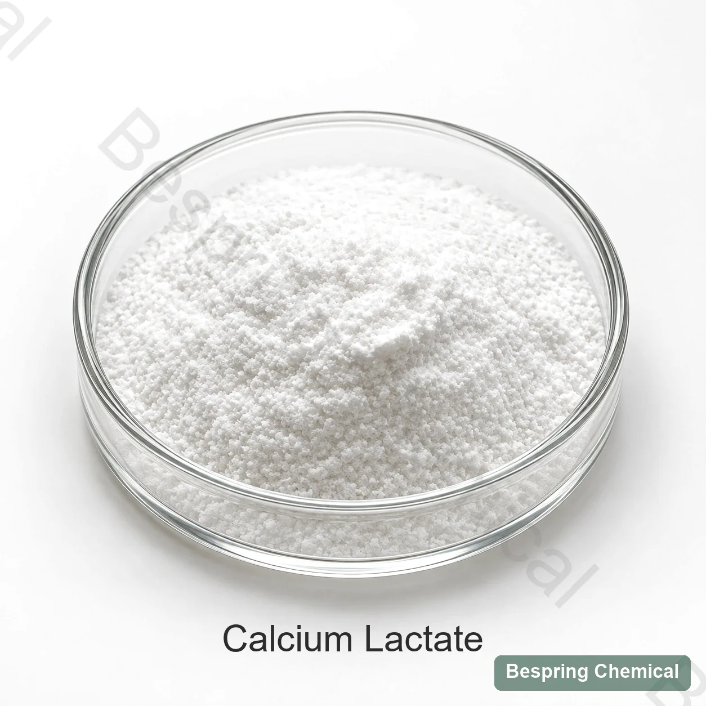
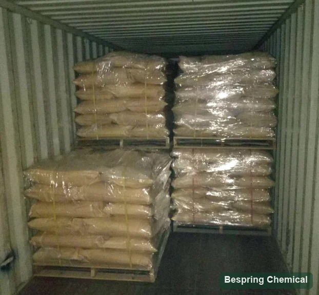

ล็อคสถานะการจําหน่าย
ต้องการวิธีระบุรูปแบบและสูญเสียเมื่อถึงขีดสุด. "Calcyum Lactate" เท่านั้นไม่พอสําหรับการเปรียบเทียบแบบเท่ากัน
Calcium Salid Solding Agency ERE327 / INS 327
แคลเซียมแลกเตตเกรดอาหาร (E327 / INS327) เป็นเกลือแคลเซียมของกรดแลกติก ใช้เป็นแหล่งแคลเซียมและสารทำให้คงรูปในอาหารที่อนุญาต Bespring จัดหาวัตถุดิบสำหรับผู้ซื้อ B2B ระหว่างประเทศ ต้องยืนยันไฮเดรต มาตรฐานอาหาร และฐานวิเคราะห์ก่อนเทียบปริมาณแคลเซียม ราคา หรือข้อกำหนดสูตร

Product image esche และ Package เมื่อมีการเรียงลําดับ
แจ้งรูปแบบไฮเดรต, การประยุกต์ใช้, การบริจาคแคลเซียม เป้าหมาย, ปริมาณ และตลาดปลายทาง
ยืนยันแบบฟอร์มไฮดราอย่าเปรียบเทียบรูปแบบเป็นเนื้อเรื่องเดียว
เปรียบเทียบเนื้อหาของแคลเซียมคํานวณตามข้อตกลง
ทําการทดสอบโปรแกรมวางแผนตรวจสอบความชัดเจน, ตั้งค่า และผลของประสาทสัมผัส
หลักฐานมากมายยืนยันการรับรองและใช้ COSA ได้
เอกลักษณ์ผลิตภัณฑ์
Calcium lactate เป็นเกลือแคลเซียมของกรดแล็กติก ที่ถูกระบุว่าเป็น E327 ใน EU และ INS 327 โดยโคเด็กซ์ (ค.ศ. ตัว อักษร นี้ ครอบ คลุม สาร ที่ มี น้ํา หนัก และ สาร ที่ ได้ จาก น้ํา หนัก: C6H10CaO6·xH2O โดย x = 0–5 ทั้งนี้ แคลเซียม แคลเซียม อธิบายถึงผงผลึกหรือแกล่ง, การสลายตัวในน้ํา และการสลายตัวในเอธานอล ยืนยันว่าเป็นรูปร่างจริง และตัวตนจริงตามข้อกําหนดของเกรดที่เสนอ และ SDS; รายการทั่วไป CSS ไม่ได้จัดตั้งระดับไฮเดรตหรือสเตริโอเคมี
JECFA ระบุว่าเป็นสารบัฟเฟอร์ ครีมแป้ง และอาหารยีสต์ 21 CFR 184.1207 นอก จาก นี้ ยัง ยอม รับ ว่า มี การ ใช้ เครื่อง มือ ที่ ใช้ ทํา ความ สะอาด และ เสริม อาหาร ภาย ใต้ สภาพ การณ์ ของ มัน.
ผู้ ซื้อ ที่ เปรียบ เทียบ กัน มัก จะ พลาด
JECFA พรรณนาถึง C6H10CaO6·xH2O โดย x มีค่าตั้งแต่0ถึง5 น้ำผลึกเปลี่ยนมวลสูตรและสัดส่วนแคลเซียมของวัสดุที่จัดหา ต้องเปรียบเทียบไฮเดรตที่แจ้ง วิธีวัดน้ำ และฐานปริมาณสารร่วมกัน มวลสูตรชนิดปราศจากน้ำ218.22 g/mol และค่าเพนตะไฮเดรตที่คำนวณได้ประมาณ308.30 g/mol
ต้องการวิธีระบุรูปแบบและสูญเสียเมื่อถึงขีดสุด. "Calcyum Lactate" เท่านั้นไม่พอสําหรับการเปรียบเทียบแบบเท่ากัน
และจงแยกทะเลออกเป็นชั้น ๆ แล้วปล่อยน้ําให้ท่วม ซึ่งในนั้นมีความจําเริญ และเป็นรากฐาน และไม่เป็นที่น่าตําหนิยิ่ง
Andiudrus eptegraphy Lactate มีแคลเซียมประมาณ 18.37% แคลเซียมบริสุทธิ์ Pendatahydate สัมพัทธ์ประมาณ 13.00% ส่วนเศษส่วนที่คํานวณไว้เหล่านี้ไม่ใช่ค่าเฉพาะเชิงพาณิชย์หรือผลที่ได้เป็นปริมาณ
เปรียบเทียบค่าใช้จ่ายที่ดินต่อกิโลกรัมของผลิตภัณฑ์ที่ประกอบกัน และในการสร้างป้อม ต่อกิโลกรัมของแคลเซียมที่ส่งสู่ธาตุ
เลือกแบบฟังก์ชัน
ใช้การใช้งานกำหนดเกรดและแผนทดสอบ ต้องตรวจการอนุญาต ปริมาณใช้ และฉลากสำหรับอาหารสุดท้ายและตลาดปลายทาง
คํานวณค่าธาตุเป้าหมาย แคลเซียม และการตรวจสอบความผันผวน ความชัดเจน ตะกอน, ตะกอน, พีเอช, เสถียรภาพชั้นวาง และการฟื้นฟูทางการวิเคราะห์
แคลเซียมบนหน้าจอที่เพิ่มขึ้นกับความมั่นคง, ความซื่อสัตย์ตัดหน้าสี, หยด, กลั่นกรองและกระบวนการผลิต
ควบคุม แคลเซียม ที่ มี อยู่ ได้, เพิ่ม เวลา และ เวลา ติด ต่อ กัน เพื่อ หลีก เลี่ยง การ ก่อ ตัว ของ ผิวหนัง ก่อน เวลา อัน ควร, การ ติด เจล ที่ ไม่ เสมอ ต้น หรือ การ อุด ตัน ใน ท้อง ถิ่น.
JECFA แสดงรายการฟังก์ชันการทําแป้งและอาหารยีสต์ การจัดการ, การหมัก, การหมัก, การหมัก และการเจือจางในสูตรจริง ซึ่งไม่ได้สร้างแคลเซียมแล็กเกตให้เป็นส่วนประกอบของกรด-ฟอสเฟตโดยตรง
การควบคุมความเสี่ยงของสูตร
ลอง ทดสอบ เมทริกซ์ ที่ สําเร็จ แล้ว ใน การ ผลิต ความ เข้ม ข้น และ ชีวิต บน ชั้น.
แคลเซียมและฟอสเฟตสามารถลดความชัดเจน หรือสร้างเป็นก้อนขึ้นได้ ขึ้นอยู่กับสายพันธุ์, pH, ความเข้มข้น และลําดับการเพิ่มเติม
ชนิดกรดและ pH มีผลต่อ แคลเซียม , รสชาติ และความมั่นคง
ในสูตรที่มีคาร์บอเนต ให้ประเมินโอกาสตกตะกอนแคลเซียมคาร์บอเนต pH และสภาวะแปรรูป ทบทวนไบคาร์บอเนตร่วมกับระบบกรดทั้งหมด แคลเซียมแลกเทตเพียงอย่างเดียวไม่กำหนดรูปแบบปล่อยก๊าซหรือขึ้นฟู
แคลเซียมสามารถข้ามลิ้งค์อัลติเน็ตได้ ไฮโดรคอลลอยด์อื่น ๆ ตอบสนองต่างกัน ยืนยันว่าเป็นโพลีเมอร์, แคลเซียมสามารถทํางานได้, แพร่กระจาย และเพิ่มลําดับ ดูที่ ส่วนเสริมการคัดเลือกของโซเดียม-เกล สําหรับการพิจารณาเรื่องสูตร
สถาปัตยกรรมเฉพาะ
เรียกค่าปัจจุบันสําหรับระดับอาหารที่เสนอ ใช้รายการด้านล่างนี้ เพื่อตกลงในข้อจํากัดและวิธีการทดสอบที่สมบูรณ์ จากนั้นเปรียบเทียบตัวแทน COA และ COA ที่จัดส่ง
บน จอ เล็ก ๆ จง หยิบ เอา โต๊ะ ไป; ผู้ ใช้ คีย์บอร์ด สามารถ โฟกัส ดู และ ใช้ ปุ่ม ลูกศร.
ปัดหรือใช้แป้นพิมพ์เพื่ออ่านทุกคอลัมน์
| ควบคุม | จะขออะไร | มันสําคัญตรงไหน |
|---|---|---|
| รูปแบบการแสดงตัว | ชื่อ, CAS, หมายเลข E/ Ronumber, สถานะการจําหน่าย | การ ป้องกัน สาร ต่าง ๆ ที่ ได้ รับ การ บํารุง รักษา อย่าง พอ เหมาะ พอ ควร |
| อะ เซ ลา | จํากัด, วิธีการและรายงานพื้นฐาน | เปิดใช้การเปรียบเทียบปริมาณและราคาที่ใช้ได้ |
| น้ํา / สูญเสียเมื่อแห้ง | จํากัดอุณหภูมิและเวลา | รองรับการลดน้ําและการตรวจสอบแผ่นพับ |
| แคลเซียมธาตุ | ช่วงที่ควบคุมหรือพื้นฐานการคํานวณ | สนับสนุน โภชนาการ และ ค่า ใช้ จ่าย ใน การ ทํา ให้ ปกติ |
| คุณสมบัติของการแก้ปัญหา | PH, ความจุ/ ความสมบูรณ์และความเข้มข้นของการทดสอบ | วิธีการและเงื่อนไขของเมทริกซ์ส่งผลกระทบต่อความหมาย |
| ตัวควบคุมการไล่ระดับสี | ความ เสี่ยง, ฟลู ออ ไรด์, ตะกั่ว และ สิ่ง ปน เปื้อน ที่ จําเป็น | มาตรฐาน และ ข้อ เรียก ร้อง ของ ลูก ค้า ต่าง กัน |
| คุณสมบัติทางกายภาพ | ขนาดอนุภาค, ความหนาแน่นและค่าการไล่ระดับ | ผล กระทบ จาก การ หา อาหาร, การ กระจาย พันธุ์, และ ความ กลมกลืน กัน |
| เอกสาร | COA, TDS, SDS, ต้นกําเนิด/ allergen และใบรับรอง | กําหนดแหล่งที่แท้จริงและจํานวนมาก |
ข้อกําหนดที่ตกลงกันแล้ว การตั้งค่าการยอมรับ, การรายงานผลของ COA สําหรับชุดที่เรียงตามลําดับ มาตรฐานสาธารณะให้วิธีการเปรียบเทียบ และไม่ได้กําหนดความสอดคล้องกันของข้อเสนอของเบสปริง เช็คใบรับรอง, ผลิตภัณฑ์, เว็บไซต์ และความถูกต้องสําหรับอุปทานที่แน่นอน
* การ เปรียบ เทียบ แบบ สแตนดาร์ด: ค่าอ้างอิง EU เดิมคือ ≥98% บนฐานปราศจากน้ำ JECFA กำหนด ≥98.0% บนฐานแห้ง โดยวิเคราะห์ EDTA จากตัวอย่างที่ทำแห้งก่อน การสูญเสียน้ำหนักเมื่อทำให้แห้ง ≤30% ที่120°C 4 h, pH6.0–8.0 ในสารละลายแบบ1-in-20 ฟลูออไรด์ ≤30 mg/kg และตะกั่ว ≤2 mg/kg เป็นเกณฑ์สาธารณะ ไม่ใช่การรับประกัน Bespring ต้องยืนยันมาตรฐาน การเตรียมตัวอย่าง และฐานรายงาน ผลรวม “โลหะหนักเป็น Pb” ไม่ยืนยันผลตะกั่วแยก อ่านวิธีและข้อจํากัดของ JECFA.
อ้างอิงที่อนุญาต
ระบุแคลเซียมแลกเตตเป็น CAS814-80-2 และ INS327 ภายใต้ Monograph1 (2006)
เปิดบันทึกการเริ่มระบบเรียกรายการคลาสการทํางานและรายการของที่จัดหมวดหมู่ไว้ - ไม่อนุญาตในทุกอาหาร
เปิดบันทึกการปฏิบัติการของ GSFA21 CFR 184.1207 ต้อง มี การ กําหนด ค่า เอฟ ซี ซี ซี และ สภาพ การณ์ ของ เด็ก ที่ เป็น โรค นี้.
บันทึกการเปิด FTP2023 ข้อความที่รวมเข้าด้วยกันเป็นข้ออ้างอิงทางประวัติศาสตร์ E327 ความบริสุทธิ์. ทบทวนภายหลังการแก้ไขและตลาดปลายทางปัจจุบันใช้เงื่อนไขก่อนที่จะอนุมัติ.
เปิดเลขธาตุ EUเนื้อหาอัปเดต 5 October 2026. JECFA และ U. ESFR. ได้ถูกตรวจสอบสําหรับการปรับปรุงนี้. ยืนยันรหัส EU และโค เดก ซ์ในปัจจุบัน สําหรับอาหารและจุดหมายปลายทาง.
แหล่ง แคลเซียม อีก แหล่ง หนึ่ง
เปรียบเทียบความหนาแน่นของแคลเซียม การกระจายของสารสนเทศ ระบบกรด โปรไฟล์ของประสาทสัมผัส และความชัดเจน
ดู แคลเซียม ซี โตดการประเมินอาการกรด-ฟอสเฟต และทิ้งพฤติกรรมเสีย มันไม่เหมือนกับการทดแทน
ดูที่ MCPออกแบบอัตราการผสมเจลและพื้นผิวที่ตั้งใจ เมื่อรวมมันเข้ากับแหล่งแคลเซียม
ดู Alida alginateแคลเซียมจะเข้ากันได้ เมื่อความยืดหยุ่นของฟอสเฟตเป็นส่วนหนึ่งของระบบ
แสดงการผสมฟอสเฟตการจัดการการจัดเก็บ
อ้างอิงทางประวัติศาสตร์

คําถามของผู้ซื้อ
ไม่จำเป็น แคลเซียมแลกเทตมีทั้งรูปแอนไฮดรัสและไฮเดรต เพนตะไฮเดรตมีน้ำผลึกห้าโมเลกุลต่อหน่วยสูตร ต้องยืนยันไฮเดรต เอกลักษณ์ และวิธีวิเคราะห์สาร/น้ำของเกรดที่เสนอ หน้านี้ไม่รับประกันว่ามีทุกรูปแบบ
แคลเซียมแลกเตตปราศจากน้ำบริสุทธิ์มีแคลเซียมเชิงทฤษฎีประมาณ18.37% โดยมวล เทียบกับประมาณ13.00% ในเพนตะไฮเดรตบริสุทธิ์ ค่าคำนวณนี้ไม่ใช่ผลรุ่นผลิต ให้ใช้ค่าแคลเซียมตามสภาพที่จัดหาคำนวณสูตร และอย่าคูณแก้ด้วยปริมาณสารซ้ำหากค่าที่แจ้งรวมการแก้นั้นแล้ว
JECFA (JECFA) อธิบายถึง แคลเซียมแล็กเกตว่าละลายในน้ํา เวลาสลายตัวและอาหารสําเร็จรูปก็ขึ้นกับรูปแบบ อนุภาค, อุณหภูมิ, ความเข้มข้น, และส่วนประกอบอื่น ๆ
Calcium ไอออนสามารถข้ามลิงก์อัลติเมต ตรงกับความเข้มข้นของแคลเซียม และส่งเข้าผสมแบบอัลลีเมต, การจัดลําดับ และเวลาติดต่อ การลองทดสอบจําเป็นในการตั้งค่าเวลา, พื้นผิวและเสถียรภาพอื่น ๆ แคลเซียมไม่ได้เป็นการทดแทนที่เท่ากันโดยอัตโนมัติ
ไม่. E327 หรือ INS 327 ระบุว่ามีการเติมสารประกอบอาหาร; สภาวะตลาดและปริมาณอาหารยังคงใช้ได้ ในสหรัฐอเมริกา 21 CFR 184.1207. ระบุเงื่อนไขของอาหารและอาหารและอาหารทารก (PDF) และแยกอาหารทารกออกจากเงื่อนไขดังกล่าว ดูอาหารและปลายทางที่วางไว้แล้ว
ไม่ใช่ ค่าอ้างอิงปริมาณสารสาธารณะเป็นเกณฑ์มาตรฐาน ส่วนรายการตรวจระบุข้อมูลที่ควรขอ ต้องตกลงข้อกำหนดเกรดที่เสนอ รวมวิธีทดสอบและฐานรายงาน COA ให้ผลเฉพาะรุ่น ไม่แทนข้อกำหนดหรือการประเมินการใช้ในตลาด
นําเสนอรูปแบบอาหารและคุณสมบัติอาหารที่แน่นอน ต้องการมาตรฐาน, ประยุกต์/ โพรเซส, เป้าหมายแคลเซียม, ความบริสุทธิ์และทางกายภาพที่สําคัญ, ปริมาณ, พัสดุ, จุดหมายปลายทาง, Incoted และความต้องการการส่งมอบ ร้องขอข้อกําหนดการเสนอ, TDS, SDS, SDS, และ SPOA Proups รวมไปถึงการประกาศและใบรับรองที่จําเป็นใดๆ
เปรี้ยวแบบระดับไฮดรา
จัด หา อาหาร ที่ มี เจตนา, มาตรฐาน ที่ กําหนด ไว้ สําหรับ จุด หมาย ปลาย ทาง และ ค่า น้ํา ร้อน เพื่อ เรา จะ ได้ ทบทวน ระดับ การ ศึกษา, เอกสาร, และ เงื่อนไข ทาง การ ค้า ที่ เสนอ ให้.
บอกเราถึงตลาดเกรดและปลายทางของคุณ เราจะได้ยืนยันได้ว่าเอกสารไหน ที่สั่งได้
การอ้างอิงภายนอกไม่ใช่ใบรับรองชุดหรือค่าผลิตภัณฑ์ของเบสปริง